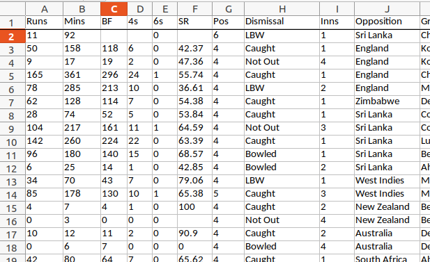
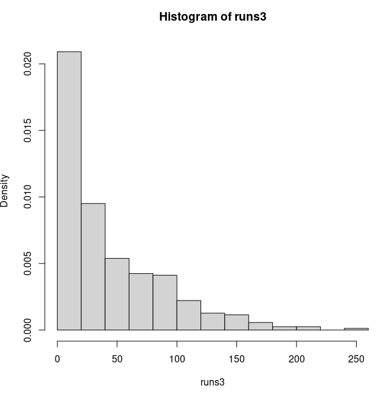
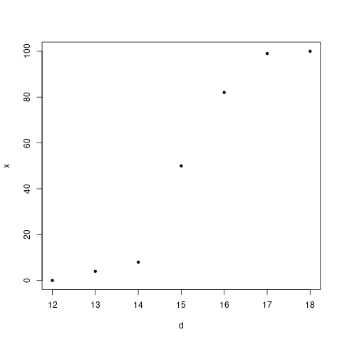
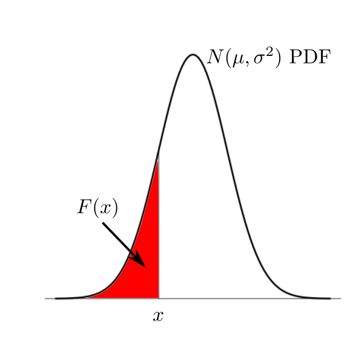
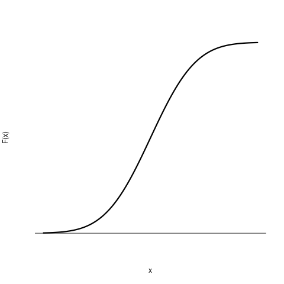
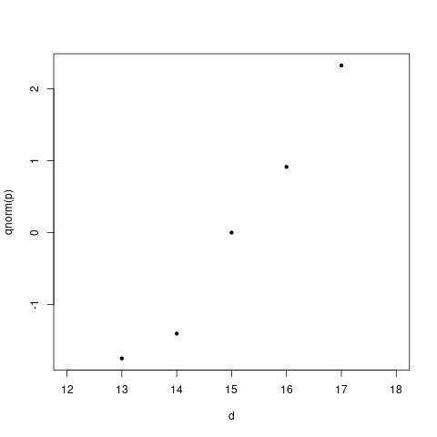

Any serious statistical exercise starts with a precise and clear picture of
the population and its relation with the sample. So here, in a nutshell, is the crux of
the statistical approach:
First try to approximate any unpredictable phenomenon in terms of
(combinations of) random experiments. Then use statistical
regularity to look into the phenomenon. The first step is
called statistical modelling, the second is
called statistical inference.
We say that $X_1,...,X_n$ constitute a random sample
from a
distribution if they are the outcomes of repeated independent
trials of the same random experiment, and their barplot converges
or
histogram converges to that distribution. We also say
that $X_1,...,X_n$ are IID from that distribution.
The limit of the barplot is called the probability mass
function (PMF). The limit of the histogram is called
the probability density function (PDF).
Remember how to find probabilities from a PMF or a PDF. For PMF,
let $S$ be the (countable) set of all possible values (e.g.,
for a die roll $S=\{1,2,3,4,5,6\}.$) Let $p:S\rightarrow[0,1]$
be the PMF. Then for any $A\subseteq S$ we have $P(A) = \sum_{x\in A} p(x).$
For PDF, let $S$ be the interval where $X$ can take
values. Let $f(x)$ be the PDF. The for any $[a,b]\subseteq S$ we have $P([a,b]) =
\int_a^b f(x)\, dx,$ i.e., the area under under the PDF over
that interval.
A statistical model is any mechanism that we postulate using
mathematical functions and random experiments to mimick
behaviour of observed data. In order for the model to be
called statistical, there must be at least one random
experiments involved in it. Our first example is the simplest
possible model, just a random experiment.
Here we shall work with cricket score data that we have got from
a public data repository called Kaggle. In particular we have
used the data from this link.
This data set is an example of a multivariate data set. It
is in the form of a data matrix, where each row is
a case and each column is a variable. Here is
little screenshot:

Here each case is one inning in the cricket career of Sachin
Tendulkar. Some of the variables
are Runs, Mins, BF, 4s.
In this exercise, we shall need only the Runs variable,
the number of runs scored by Sachin in each inning. The extracted
data set is an example of a univariate data set. Our model
is that all these numbers are basically like IID observations
from the same distribution with PDF:
$$
f(x) = \frac ab \left(\frac xb\right)^{a-1} \exp\left[ \left(\frac xb\right)^a
\right],\text{ for } x>0.
$$
Here $a,b>0$ are two parameters. This is called
the Weibull distribution. Our model says that if we make a
histogram of the runs, then the shape will match $f(x)$
for some suitably chosen values of $a$ and $b.$
"Choosing the values suitably" to match the behaviour of the data
is called estimation. We shall learn about estimation
procedures later.
We start by loading the data into R:
x = read.table('run.txt',head=T)
The file run.txt has the heading "Runs"
in the first line. That is why we wrote head=T
(abbreviation of header=TRUE). The file must reside
in the working directory of R. If you are not sure check
the current working directory using the getwd()
function. You may change the working directory using
setwd('path to your desired directory').
The output of read.table is always a data
frame, i.e., a matrix-like rectangular object, where the rows
are the cases, and the columns are the variables. It is good idea
to chec its dimensions (i.e., numbers of rows and columns):
dim(x)
We have 819 rows and a single column.
Next we try to make a histogram of the data. There are a couple
of snags here. First, R distinguishes between a matrix with one
column and a vector. We need to extract the first column as a vector:
runs = x[,1]
If $A$ is a matrix, then its $(i,j)$-th entry is
denoted by A[i,j] in R. The indices start from 1,
as in mathematics. We write A[,j] to mean the
entire $j$-th column, and A[i,] to denote the
entire $i$-th row.
hist(runs,prob=T)
This error message shows up because
our data set contains some non-numeric values: DNB (Did Not Bat)
and TDNB (Team Did Not Bat). We need to remove these cases from
the data set before we can make a histogram. This is an example
of data cleaning. For this we first force all the values
to numeric:
runs2 = as.numeric(runs)
R would complain that some NAs have been
introduced. NA means "Not Available", which is
R`s way of denoting a missing value. We need to remove these:
bad = is.na(runs2)
The function is.na checks if its input
is NA or not. Here bad is an array
of TRUEs and FALSEs. We keep only those
values of runs2 where bad
is FALSE:
runs3 = runs2[!bad] # The ! means "not"
Finally we can create a histogram:
hist(runs3,prob=T)
The histogram looks like this:

Next we need to estimate $a$ and $b.$ We use an R
package called MASS (already present in R by
default), which has a function
called fitdistr that estimates parameters:
library(MASS)
fitdistr(runs,"weibull")
Yaaack! Well, let`s keep R happy by adding a little offset, say
1.
fitdistr(runs+1,"weibull")
Thus the best value of shape ($a$) is 0.93, and the best
value for scale ($b$) is 43.49. Don`t get carried away by
the apparent high precision of the output. The fit hardly
changes if you modify the parameters only slightly. Ignore the
numbers in the parentheses for the moment.
Let us overlay the best fitting Weibull density
on the histogram to see if the best fit is indeed a good fit or not:
Indeed, it is a good fit. It is surprising that for any
international standard cricketer the run data has a Weibull shape
(the parameter values may differ)! One potential use of this
model is to relate the estimated parameter values to innate
characteristics of the cricketers, just like probability of head
for a coin toss. It is a feature that is readily apparent unless
we look through the instriment of statistical regularity.
I am not aware of any attempt to relate the parameters in this
example with characteristics of the cricketers. But the next
model is used for that purpose.
D.J. Finney was a toxicologist interested in finding the
strengths of different poisons. A naive way to measure the
strength of a poison is by determining its lethal dose, i.e.,
the minimum dose needed to kill. Problem is that this dose depends
not only upon the posion, but also on what you are trying to
kill. Finney experimented with mice. So he chose mice as
controlled as possible (w.r.t. age, breed, gender etc). But even
then the lethal dose might vary randomly from mouse to mouse.
So Finney went for a statistical model. He postulated a normal
model $N(\mu,\sigma^2)$ for
the lethal dose of our poison for a random
mouse. Unlike the run data example, here the parameters have
clear interpretation. Then $\mu$ measures the strength of the poison, while
$\sigma^2 $ gives an idea about how unreliable the poison
is. Indeed, Finney called $\frac \mu \sigma$
the toxicity and $\frac 1 \sigma$
the reliability of the poison.
You might expect that the next step would be to collect data,
i.e., pick a random mouse, and start applying the poison bit by
bit, and recording the dose when the mouse first succumbs to
death. Unfortunately, we cannot carry out this experment in
practice, because death is not an easily detected phenomenon.
So, instead, Finney applied the same dose to many mice (say 100),
and counted the number of deaths
(say $k$). Then $k/100$ should be close to the
probability $P(X \leq d).$ He did this with different
doses, resulting in a data set like the following (assuming 10 different doses).
Dose ($d$)
Batch size ($n$)
Number dead ($X$)
$d_1$
$n_1$
X_1
$d_2$
$n_2$
X_2
$d_3$
$n_3$
X_3
$\vdots$
$\vdots$
$\vdots$
$d_10$
$n_10$
X_10
Finney plotted the $\frac{X_i}{n_i}$ values against the
doses $d_i$ values. He got a plot like this:

This set him up in hope, because this was supposed to be
approximately like the graph of the function $F(x)$, which
is the area under the $N(\mu,\sigma^2)$ PDF to the left
of $x.$

He knew that the plot of $F(x)$ (for any value
of $\mu $ and $\sigma^2 $) looks like an S as follows:

Since the points obtained from his data also followed this
pattern, Finney was happy. The question was now to find suitable
values for $\mu$ and $\sigma^2 $ such that the S-curve
passes as closes as possible to the points. For this he used a
mathematical property of normal PDF.
Consider the function
$$
\Phi (x) = \int_{- \infty} ^ x \frac{1}{\sqrt{2\pi}} e^{-t^2/2}\, dt.
$$
This is clearly (?) a strictly increasing (and hence one-one),
continuous, onto function from ${\mathbb R}$ to $(0,1).$ Now it
is easy (?) to see that
$$
F (x) = \int_{- \infty} ^ x \frac{1}{\sqrt{2\pi}\sigma} e^{-\frac{1}{2
\sigma^2}(t-\mu)^2}\, dt = \Phi \left(\frac{x-\mu}{\sigma}\right).
$$
So Finney applied $\Phi ^{-1} $ to both sides of the
approximate equality $F(d_i) = \frac{X_i}{n_i}$ to get
$$
\frac{d_i - \mu}{\sigma} = \Phi ^{-1}\left( \frac{X_i}{n_i} \right).
$$
He called $\Phi ^{-1}( \cdot )$ the probit
function. Finney now plotted $\Phi ^{-1}\left( \frac{X_i}{n_i}
\right)$ against $d_i$ to get a plot like this:

He was relieved to find a linear pattern, which justified his
normality assumption. Now it was a simple matter to find the
slope and intercept of the line, and obtain the estimated
toxicity and reliability of the poison.
The probit analysis is routinely performed on rabbits to test for
toxicity of chemicals used in eye cosmetics. Thousands of rabbits
turn blind every year due to this. Click on the image below to
know more about this.